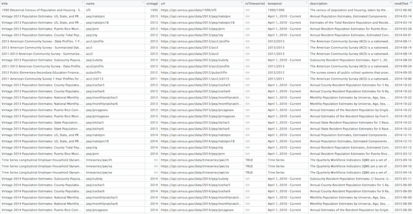

censusapi is a wrapper for the United States Census Bureau’s APIs. As of 2017 over 200 Census API endpoints are available, including Decennial Census, American Community Survey, Poverty Statistics, and Population Estimates APIs. This package is designed to let you get data from all of those APIs using the same main function—getCensus—and the same syntax for each dataset.
censusapi generally uses the APIs’ original parameter names so that users can easily transition between Census’s documentation and examples and this package. It also includes metadata functions to return data frames of available APIs, variables, and geographies.
To use the Census APIs, sign up for an API key. Then, if you’re on a non-shared computer, add your Census API key to your .Renviron profile and call it CENSUS_KEY. censusapi will use it by default without any extra work on your part. Within R, run:
# Add key to .Renviron Sys.setenv(CENSUS_KEY=YOURKEYHERE) # Reload .Renviron readRenviron("~/.Renviron") # Check to see that the expected key is output in your R console Sys.getenv("CENSUS_KEY")
In some instances you might not want to put your key in your .Renviron - for example, if you’re on a shared school computer. You can always choose to specify your key within getCensus instead.
To get started, load the censusapi library.
library(censusapi)
The Census APIs have over 200 endpoints, covering dozens of different datasets.
To see a current table of every available endpoint, run listCensusApis:
apis <- listCensusApis() View(apis)
 This returns useful information about each endpoint, including name, which you’ll need to make your API call.
getCensus
The main function in censusapi is getCensus, which makes an API call to a given Census API and returns a data frame of results. Each API has slightly different parameters, but there are always a few required arguments:
name: the name of the API as defined by the Census, like “acs5” or “timeseries/bds/firms”vintage: the dataset year, generally required for non-timeseries APIsvars: the list of variable names to getregion: the geography level to return, like state or countySome APIs have additional required or optional arguments, like time, monthly, or period. Check the specific documentation for your API to see what options are allowed.
Let’s walk through an example getting uninsured rates by income group using the Small Area Health Insurance Estimates API, which provides detailed annual state-level and county-level estimates of health insurance rates.
censusapi includes a metadata function called listCensusMetadata to get information about an API’s variable options and geography options. Let’s see what variables are available in the SAHIE API:
sahie_vars <- listCensusMetadata(name = "timeseries/healthins/sahie", type = "variables") head(sahie_vars)
| name | label | concept | predicateType | group | limit | required |
|---|---|---|---|---|---|---|
| NIPR_LB90 | Number in Demographic Group for Selected Income Range, Lower Bound for 90% Confidence Interval | Uncertainty Measure | int | N/A | 0 | NA |
| NIPR_PT | Number in Demographic Group for Selected Income Range, Estimate | Estimate | int | N/A | 0 | NA |
| AGECAT | Age Category | Demographic ID | int | N/A | 6 | default displayed |
| NIC_PT | Number Insured, Estimate | Estimate | int | N/A | 0 | NA |
| GEOID | State+County FIPS Code | Uncertainty Measure | int | N/A | 0 | NA |
| STATE | State FIPS Code | Geographic ID | int | N/A | 0 | NA |
We’ll use a few of these variables to get uninsured rates by income group:
IPRCAT: Income Poverty Ratio CategoryIPR_DESC: Income Poverty Ratio Category DescriptionPCTUI_PT: Percent Uninsured in Demographic Group for Selected Income Range, EstimateNAME: Name of the geography returned (e.g. state or county name)We can also use listCensusMetadata to see which geographic levels we can get data for using the SAHIE API.
listCensusMetadata(name = "timeseries/healthins/sahie", type = "geography")
| name | geoLevelId | limit | referenceDate | requires | wildcard | optionalWithWCFor |
|---|---|---|---|---|---|---|
| us | 010 | 1 | 2015-01-01 | NULL | NULL | NA |
| county | 050 | 3142 | 2015-01-01 | state | state | state |
| state | 040 | 52 | 2015-01-01 | NULL | NULL | NA |
This API has three geographic levels: us, county within states, and state.
First, using getCensus, let’s get uninsured rate by income group at the national level for 2017.
getCensus(name = "timeseries/healthins/sahie", vars = c("NAME", "IPRCAT", "IPR_DESC", "PCTUI_PT"), region = "us:*", time = 2017)
We can also get this data at the state level for every state by changing region to "state:*":
sahie_states <- getCensus(name = "timeseries/healthins/sahie", vars = c("NAME", "IPRCAT", "IPR_DESC", "PCTUI_PT"), region = "state:*", time = 2017) head(sahie_states)
Finally, we can get county-level data. The geography metadata showed that we can choose to get county-level data within states. We’ll use region to specify county-level results and regionin to request data for Alabama and Alaska.
sahie_counties <- getCensus(name = "timeseries/healthins/sahie", vars = c("NAME", "IPRCAT", "IPR_DESC", "PCTUI_PT"), region = "county:*", regionin = "state:01,02", time = 2017) head(sahie_counties, n=12L)
Because the SAHIE API is a timeseries (as indicated in its name), we can get multiple years of data at once using the time argument.
This package allows access to the full range of the U.S. Census Bureau’s APIs. Where the API allows it, you can specify complicated geographies or filter based on a range of parameters. Each API is a little different, so be sure to read the documentation for the specific API that you’re using. Also see more examples in the example masterlist.
Some of the APIs allow complex calls, including specifying a country FIPS code or age. The most commonly used parameters, including time, date, and sic are included as built-in options in getCensus, but you can also specify other parameters yourself. (Note: this generally does not apply to the popular American Community Survey and Decennial Census APIs.)
In the SAHIE API, we can filter data by the categorical variables AGECAT (age group), IPRCAT (income group), RACECAT (race) and SEXCAT (sex), in addition to geography and time. More information on those variables is available in the online documentation.
Here’s how to get the uninsured rate (PCTUI_PT) for non-elderly adults (AGECAT = 1) with incomes of 138 to 400% of the poverty line (IPRCAT = 5), by race (RACECAT) and state.
sahie_nonelderly <- getCensus(name = "timeseries/healthins/sahie", vars = c("NAME", "PCTUI_PT", "IPR_DESC", "AGE_DESC", "RACECAT", "RACE_DESC"), region = "state:*", time = 2017, IPRCAT = 5, AGECAT = 1) head(sahie_nonelderly)
Note: data by race is only returned where the population is large enough, so some states will not have rows for some race groups. Here’s another example, getting national data from percent uninsured (PCTUI_PT) and number uninsured (NUI_PT), along with the associated margins of error, by race group and income group for all years.
sahie_nonelderly_annual <- getCensus(name = "timeseries/healthins/sahie", vars = c("NAME", "PCTUI_PT", "PCTUI_MOE", "NUI_PT", "NUI_MOE", "IPRCAT", "IPR_DESC", "AGE_DESC", "RACECAT", "RACE_DESC"), region = "us:*", time = "from 2006 to 2017", AGECAT = 1) head(sahie_nonelderly_annual)
Other APIs can be filtered too. For example, the International Data Base population projections APIs allow you to get data by age and country.
See what variables the IDB 1 year API allows:
listCensusMetadata(name = "timeseries/idb/1year", type = "variables")
| name | label | concept | predicateType | group | limit | required |
|---|---|---|---|---|---|---|
| POP | Total mid-year population | Total Midyear Population | int | N/A | 0 | NA |
| AREA_KM2 | Area in square kilometers | Geographic Characteristics | int | N/A | 0 | NA |
| FIPS | FIPS country/area code | Geographic Characteristics | string | N/A | 0 | NA |
| SEX | Sex | Age and Sex | int | N/A | 0 | default displayed |
| YR | Year | Required variable | int | N/A | 0 | NA |
| NAME | Country or area name | Geographic Characteristics | string | N/A | 0 | NA |
| AGE | Single year of age from 0-100+ | Age and Sex | int | N/A | 0 | true |
Here’s a simple call getting projected population by age for all countries in 2050.
pop_2050 <- getCensus(name = "timeseries/idb/1year", vars = c("FIPS", "NAME", "AGE", "POP"), time = 2050) head(pop_2050)
But we can make a much more specific call by specifying FIPS and AGE to get just the population projections for teenagers in Portugal.
pop_portugal <- getCensus(name = "timeseries/idb/1year", vars = c("NAME", "POP"), time = 2050, FIPS = "PO", AGE = "13:19") pop_portugal
The Quarterly Workforce Indicators APIs allow even more specific calls. Here’s one example:
For some surveys, particularly the American Community Survey and Decennial Census, you can get many related variables at once using a group, defined by the Census Bureau. In some other data tools, like American FactFinder, this idea is referred to as a table.
The American Community Survey (ACS) APIs include estimates (variable names ending in “E”), annotations, margins of error, and statistical significance, depending on the data set. Read more on ACS variable types and annotation symbol meanings on the Census website.
You can retrieve these annotation variables manually, by specifying a list of variables. We’ll get the estimate, margin of error and annotations for median household income in the past 12 months for Census tracts in Alaska.
acs_income <- getCensus(name = "acs/acs5", vintage = 2017, vars = c("NAME", "B19013_001E", "B19013_001EA", "B19013_001M", "B19013_001MA"), region = "tract:*", regionin = "state:02") head(acs_income)
You can also retrieve also estimates and annotations for a group of variables in one command. Here’s the group call for that same table, B19013.
# See descriptions of the variables in group B19013 group_B19013 <- listCensusMetadata(name = "acs/acs5", vintage = 2017, type = "variables", group = "B19013") group_B19013 acs_income_group <- getCensus(name = "acs/acs5", vintage = 2017, vars = c("NAME", "group(B19013)"), region = "tract:*", regionin = "state:02") head(acs_income_group)
Some variable groups contain many related variables and their associated annotations. As an example, we’ll get the list of variables included in group B17020, poverty status by age.
group_B17020 <- listCensusMetadata(name = "acs/acs5", vintage = 2017, type = "variables", group = "B17020") head(group_B17020)
Some geographies, particularly Census tracts and blocks, need to be specified within larger geographies like states and counties. This varies by API endpoint, so make sure to read the documentation for your specific API and run listCensusMetadata to see the available geographies.
You may want to get get data for many geographies that require a parent geography. For example, tract-level data from the 1990 Decennial Census can only be requested from one state at a time.
In this example, we use the built in fips list of state FIPS codes to request tract-level data from each state and join into a single data frame.
fips tracts <- NULL for (f in fips) { stateget <- paste("state:", f, sep="") temp <- getCensus(name = "sf3", vintage = 1990, vars = c("P0070001", "P0070002", "P114A001"), region = "tract:*", regionin = stateget) tracts <- rbind(tracts, temp) } head(tracts)
The regionin argument of getCensus can also be used with a string of nested geographies, as shown below.
The 2010 Decennial Census summary file 1 requires you to specify a state and county to retrieve block-level data. Use region to request block level data, and regionin to specify the desired state and county.
The APIs contain hundreds of API endpoints and dozens of datasets, each of which work a little differently. The Census Bureau also makes frequent updates, which unfortunately are not always announced in advance. If you’re getting an error message or unexpected results, here are some things to check.
Use listCensusMetadata(type = "variables") on your API to see the table of available variables.
Use listCensusMetadata(type = "geographies") on your dataset to check which geographies you can use.
state:01, make sure to use the full code, padded with 0s if necessary. The APIs did not always enforce this (previously, state:1 usually worked), but now they do. See the Census reference files for valid FIPS codes.Occasionally you might get the general error message "There was an error while running your query. We've logged the error and we'll correct it ASAP. Sorry for the inconvenience." This comes from the Census Bureau and could be caused by any number of problems, including server issues. Try rerunning your API call. If that doesn’t work and you are requesting a large amount of data, try reducing the amount that you’re requesting, for example getting only one state at a time. If you’re still having trouble, email cnmp.developers.list@census.gov. Include in your email the raw API call that’s provided in your getCensus error message (not your R code) so that they can try to help.
Read the documentation to understand why you might see values like -555555555 in your margin of error columns. These values are set by the Census Bureau, not this censusapi package.